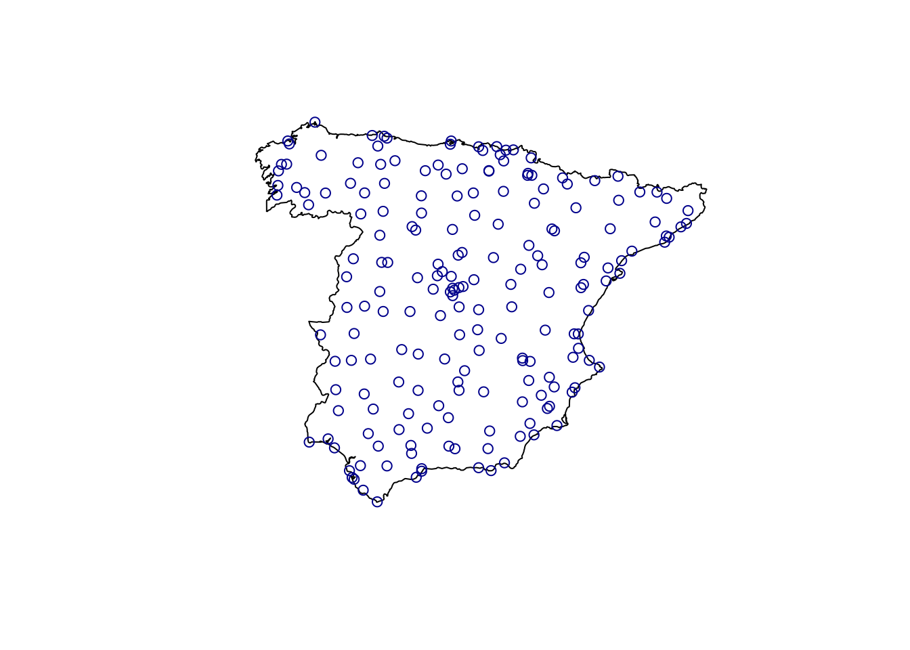
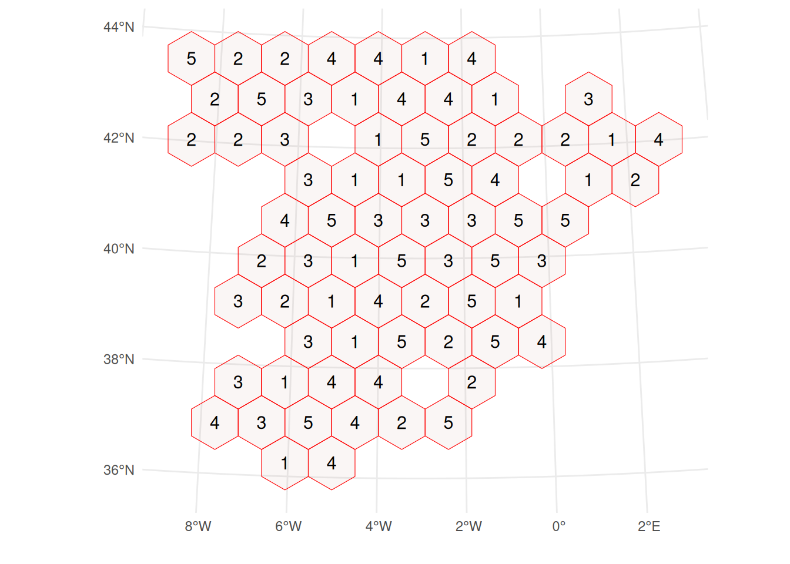
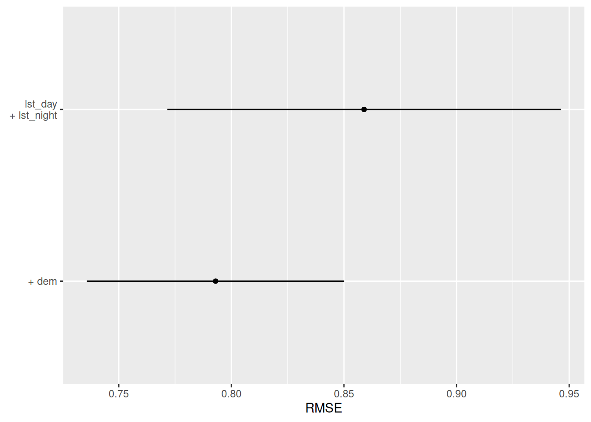
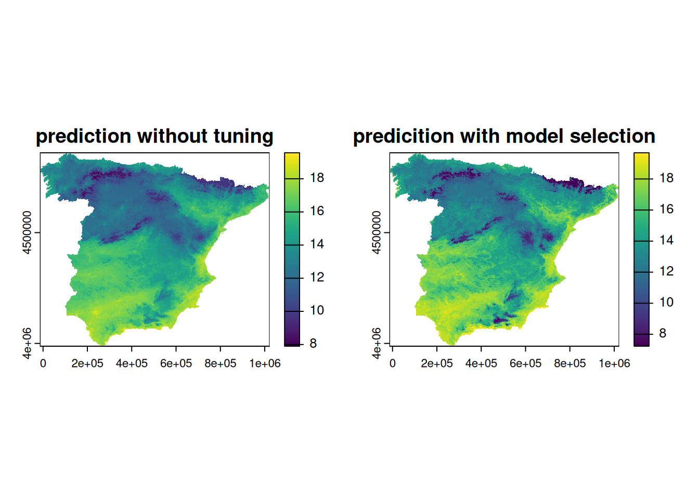

library("caret")
library("CAST")
library("blockCV")
library("sf")
library("terra")Spatial modelling with caret
Intro
example: spatially continuous prediction of temperature using a spatial machine-learning workflow in the caret environment
caret in line with functional programming paradigm
uses
train()as main function, CV strategies can be defined usingtrainControl()documentation:
- online tutorial: https://topepo.github.io/caret/
- detailed, not so fast to find things
- easy to filter available modelling methods and their tuning parameters
- paper: https://doi.org/10.18637/jss.v028.i05
- book: http://appliedpredictivemodeling.com/
- online tutorial: https://topepo.github.io/caret/
Load libraries
Load data
Load data needed in this modelling example:
- covariate stack: raster dataset of the environmental covariates used to predict air temperature
- train points: vector dataset of ground measurements of air temperature
- spain: region for which predictions are made
covariate_stack <- rast("data/predictors.tif")
covariate_names <- names(covariate_stack)
spain <- st_read("data/spain.gpkg")Reading layer `spain' from data source
`/home/janl/conferences_misc/FOSSGIS/FOSSGIS2025-examples/data/spain.gpkg'
using driver `GPKG'
Simple feature collection with 1 feature and 0 fields
Geometry type: MULTIPOLYGON
Dimension: XY
Bounding box: xmin: -13454.15 ymin: 3988025 xmax: 1020771 ymax: 4859816
Projected CRS: ED50 / UTM zone 30Ntrain_points <- st_read("data/temp_train.gpkg")Reading layer `temp_train' from data source
`/home/janl/conferences_misc/FOSSGIS/FOSSGIS2025-examples/data/temp_train.gpkg'
using driver `GPKG'
Simple feature collection with 195 features and 1 field
Geometry type: POINT
Dimension: XY
Bounding box: xmin: 36026.79 ymin: 3988818 xmax: 978160.6 ymax: 4858999
Projected CRS: ED50 / UTM zone 30Ntrain_data <- extract(covariate_stack, train_points, bind=TRUE, ID=FALSE) |>
st_as_sf()
plot(st_geometry(spain))
plot(st_geometry(train_points), col = "blue4", add = TRUE)
Train first model
Firstly, a simple modelling workflow without feature selection and hyperparameter tuning is shown:
- split data into training and test data
- train model using the training data only
- predict on test data to obtain error metrics
- predict on covariate stack to obtain spatially continuous prediction of air temperature
Note
Geometry column needs to be dropped before using caret::train().
# 1) train-test split
trainIndex <- createDataPartition(train_data$temp, p = .8,
list = FALSE,
times = 1)
temperature_train <- train_data[ trainIndex,]
temperature_test <- train_data[-trainIndex,]
# 2) model training
model <- train(temp~., data=st_drop_geometry(temperature_train), method="ranger",
tuneGrid=expand.grid("mtry"=4, "splitrule"="variance", "min.node.size"=5),
num.trees=100)
# 3) predict on test data
test_df <- temperature_test[,"temp",drop=FALSE]
test_df$prediction <- predict(model, temperature_test)
test_metrics <- postResample(pred = test_df$prediction, obs = test_df$temp) |>
round(3) |>
t() |>
as.data.frame()
print(test_metrics) RMSE Rsquared MAE
1 0.873 0.906 0.695# 4) predict to raster stack
prediction_spatial <- terra::predict(covariate_stack, model, na.rm=TRUE)Spatial Cross-Validation for model selection
Cross-validation (CV) methods are often employed to obtain optimal hyperparameter values. Therefore, the training data are split into \(k\) folds, and a model is trained on \(k\)-1 folds. The fold not used for model training is then used to obtain the test statistic. This is repeated over all folds, and the test metric is averaged over the \(k\) folds. In spatial machine-learning, a spatial CV is often needed to prevent very similar data to be in the training and testing fold at the same time, which is often the case if training data are clustered and leads to overly optimistic CV error estimates. R-packages that implement spatial CV include, e.g., blockCV and CAST. Here, we will explore the integration of those two with caret.
Hyperparameter tuning using spatial block cross-validation
The blockCV package implements different blocking methods for spatial CV. The resulting object of the main function (cv_spatial) contains a nested list of the \(k\) folds and the training data rows that belong to each fold, as well as a list of the test data left out in each of the \(k\) iteration. These lists can be obtained using lapply() and then be used as an input to the trainControl() function of caret that defines the CV strategy used in train(). The grid of hyperparameter values tested during CV is defined using the tune_grid argument in train(). Here, we test mtry values from 2 to 12 and min.node.size values between 5 and 15. The combination of mtry and min.node.size that minimizes the RMSE is then automatically used to re-train a final model with the complete training data set.
spatial_blocks <- cv_spatial(temperature_train, k=5, progress = FALSE)
train test
1 128 31
2 127 32
3 127 32
4 126 33
5 128 31
train_ids <- lapply(spatial_blocks$folds_list, function(x) x[[1]])
test_ids <- lapply(spatial_blocks$folds_list, function(x) x[[2]])
tr_control_block <- trainControl(method="cv", index=train_ids, indexOut = test_ids, savePredictions = TRUE)
hyperparameter_grid <- expand.grid("mtry" = c(2,4,6,10,12),
"min.node.size" = c(5,10,15),
"splitrule" = "variance")
model_spatial <- train(temp~., data=st_drop_geometry(temperature_train), method="ranger",
trControl=tr_control_block, tuneGrid=hyperparameter_grid, num.trees=100)
model_spatial$finalModelRanger result
Call:
ranger::ranger(dependent.variable.name = ".outcome", data = x, mtry = min(param$mtry, ncol(x)), min.node.size = param$min.node.size, splitrule = as.character(param$splitrule), write.forest = TRUE, probability = classProbs, ...)
Type: Regression
Number of trees: 100
Sample size: 159
Number of independent variables: 22
Mtry: 10
Target node size: 5
Variable importance mode: none
Splitrule: variance
OOB prediction error (MSE): 0.7529586
R squared (OOB): 0.9080497 Hyperparameter tuning using target-oriented CV
Another spatial CV method is kNNDM, which is implemented in the CAST-package and aims at emulating the prediction situation encountered by the model during CV. In this case, the prediction situation is to predict from the temperature measurement stations to the whole area of Spain. Since the temperature measurement stations are rather randomly distributed over the area of Spain, no spatial blocking is needed and kNNDM randomly assigns training points to CV folds. The output of kNNDM contains a list of row indices of training data points that are used in each CV-iteration (indx_train), as well as of indices that are left out in each iteration (indx_test). These lists can easily be used as input to the trainControl() function of caret that defines the CV used in train().
knndm_folds <- knndm(tpoints = temperature_train, modeldomain = spain, space="geographical", clustering = "kmeans", k = 5)
tr_control_knndm <- trainControl(method="cv", index=knndm_folds$indx_train, indexOut = knndm_folds$indx_test, savePredictions = TRUE)
hyperparameter_grid <- expand.grid("mtry" = c(2,4,6,10,12),
"min.node.size" = c(5,10,15),
"splitrule" = "variance")
model_knndm <- train(temp~., data=st_drop_geometry(temperature_train), method="ranger",
trControl=tr_control_knndm, tuneGrid=hyperparameter_grid, num.trees=100)
model_knndm$finalModelRanger result
Call:
ranger::ranger(dependent.variable.name = ".outcome", data = x, mtry = min(param$mtry, ncol(x)), min.node.size = param$min.node.size, splitrule = as.character(param$splitrule), write.forest = TRUE, probability = classProbs, ...)
Type: Regression
Number of trees: 100
Sample size: 159
Number of independent variables: 22
Mtry: 10
Target node size: 5
Variable importance mode: none
Splitrule: variance
OOB prediction error (MSE): 0.7688781
R squared (OOB): 0.9061056 Feature selection using target-oriented CV
To reduce the number of environmental covariates, and thus enhance the generalizability of the model, feature selection is commonly applied in machine-learning workflows. CAST implements Forward-Feature-Selection, that can be used with spatial CV. Here, we use the results of the hyperparameter tuning above and kNNDM CV to select the most relevant features. Plotting the results of FFS() shows that the variables DEM, Y, EDF5 and primaryroads were selected.
selected_hyperparams <- model_knndm$bestTune
model_ffs <- ffs(predictors = st_drop_geometry(temperature_train)[,covariate_names],
response = st_drop_geometry(temperature_train)$temp,
method = "ranger",
num.trees = 100,
trControl = tr_control_knndm,
tuneGrid = selected_hyperparams,
verbose = FALSE)
plot(model_ffs, plotType="selected")
# obtain prediction
prediction_ffs <- terra::predict(covariate_stack, model_ffs, na.rm=TRUE)Compare predictions obtained by the un-tuned model vs the tuned model
par(mfrow=c(1,2))
plot(prediction_spatial, main="prediction without tuning")
plot(prediction_ffs, main="predicition with model selection")
Conclusion
- large set of modelling algorithms
- tools for visualization of data (featurePlot)
- no active development
- geometry column needs to be dropped
- functional programming
- one main function with simple structure
- train - function automatically includes hyperparameter tuning
- flexible to integrate other (CV) packages (only list of indices needed, can be created with CAST::CreateSpaceTimeFolds())
- good integration with CAST (spatial CV / FFS)